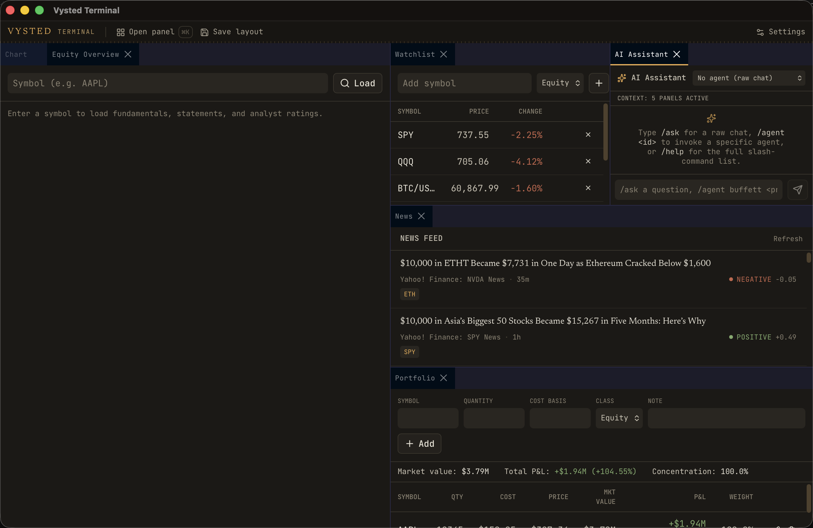
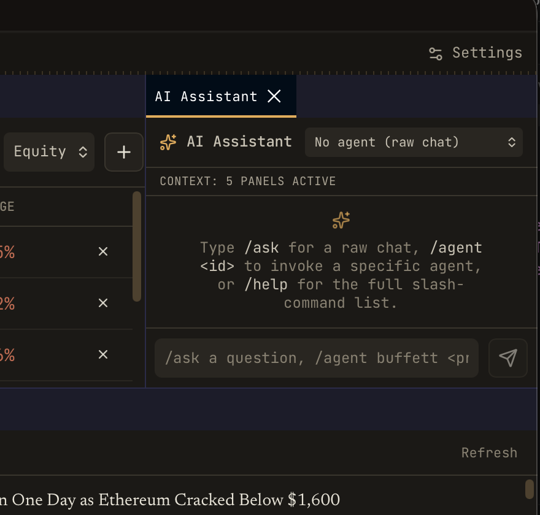
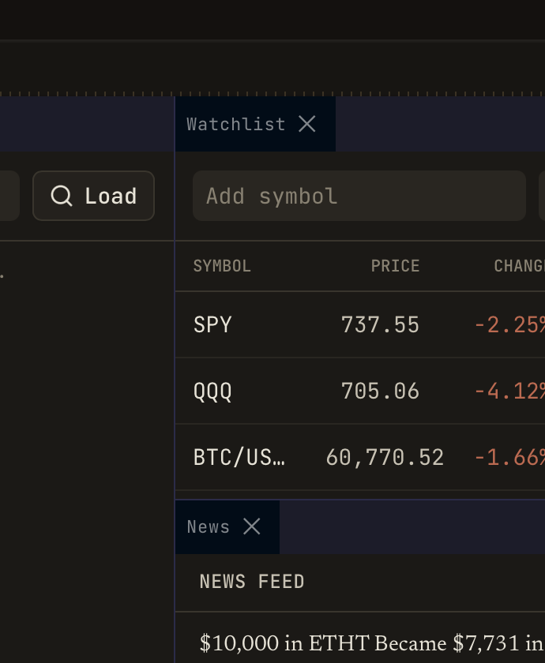

CGWindowListCreateImage / screencapture) — the same
pixels the user sees. No DOM/MCP read was used for verification (the
tauri-mcp bridge was deliberately avoided for inspection, per the brief).
osascript System Events → error −1719;
cliclick → “Accessibility privileges not enabled”) is dropped, and the
tauri-mcp bridge wedges while the WKWebView is occluded. Result: I verified every panel
that restores on boot (the default cockpit) on real pixels, but could
not autonomously drive to AAPL-loaded / ⌘K / other-panel states. Those are
needs-manual-check below, with the one-step unblock.


font-sans) + an aligned, equal-height inset send — the old detached size-10 rounded-full 40px send is gone.No agent (raw chat) select = 4px control; context: 5 panels active micro label; mono prose empty-state with amber /ask /agent /help.
| Class | Looked for | Result on captured pixels |
|---|---|---|
| Numeric collision / mid-number truncation | watchlist + portfolio columns | None — right-aligned tabular, decimals aligned |
| Control-row misalignment | Load+search, composer controls, selects | None — controls share the 32px height baseline |
| Label / description clipping | tabs, headers, empty states | None — ellipsis where needed, no hard clip |
| Off-scale type | every visible text node | None — all on the named mono scale |
| Shadow / glow | panels, tabs, composer, selects | None — flat surface-ladder + hairlines |
| Cross-panel inconsistency | 5 cockpit panels side by side | Consistent mono / radius / spacing / accent |
verified (real pixels)
verified (code level)
@google/design.md → 0/0)text-[ / 0 shadow- / 0 stray container radius / 0 font-sansbroken
needs-manual-check (driving blocked)